The results of cutadapt of the 18S reads show small reads that match the primers but that are too short to pass the size filter (200bp). These are primer dimmers from the PCR amplification. They can be safely removed.
Read retention after primer trimming and filtering was generally high across samples, ranging from 59.4% to 100.0%. Most samples showed very high retention (≥95%), with many reaching 100%. A small subset of samples formed a lower-retention cluster (~59–63%), which reduced the overall range but did not represent the dominant pattern. The negative control showed substantially lower retention (10.9%), as expected in the absence of a true amplicon signal.
🔹 Unified DADA2 description
Both datasets were processed with the standard DADA2 workflow:
NoteNote
For 18S, shorter reads (150 bp) and a very short amplicon (~121 bp) justify relatively short truncLen (130, 120) and minLen = 80. For COI, the longer amplicon fragment (~313 bp) and 2×250 bp reads allow more aggressive truncation (210, 210) with large overlap (90) and a higher minLen = 200 to remove spurious short fragments.
🔍 Read Tracking Summary
The following table summarizes read counts at each step of the DADA2 pipeline:
systemfonts and textshaping have been compiled with different versions of Freetype. Because of this, textshaping will not use the font cache provided by systemfonts
DADA2 Counts for 16S and 18S
16S
18S
sample
input
filtered
nonchim
reads_retained (%)
input
filtered
nonchim
reads_retained (%)
01_St1_D1
371138
366327
353816
95.3
167938
162000
159233
94.8
02_St1_D15
316995
309348
296421
93.5
295467
291433
278278
94.2
03_St1_D45
601692
571131
545236
90.6
609184
601806
559695
91.9
04_St2_D1
525979
518763
499379
94.9
206261
203128
195165
94.6
05_St2_D15
316303
311817
298475
94.4
396497
391525
377723
95.3
06_St2_D45
318879
309866
293311
92.0
245246
240807
224000
91.3
07_St3_D1
312747
308853
297158
95.0
310313
306633
300024
96.7
08_St3_D15
307648
300419
285087
92.7
336656
331936
318824
94.7
09_St3_D45
306492
296619
281668
91.9
255214
251838
239046
93.7
10_St4_D1
351913
347298
332362
94.4
156296
154144
149421
95.6
11_St4_D15
359547
352804
335602
93.3
272353
268199
254758
93.5
12_St4_D45
396421
388578
368041
92.8
131145
119740
111963
85.4
13_St5_D1
313115
308863
294759
94.1
209978
207268
196396
93.5
14_St5_D15
363162
356701
340086
93.6
266658
262190
246231
92.3
15_St5_D45
353221
343088
325185
92.1
287883
282183
268270
93.2
16_St6_D1
281201
276415
263685
93.8
299018
295138
283053
94.7
17_St6_D15
418191
409711
390284
93.3
436923
431363
410669
94.0
18_St6_D45
390099
381026
362714
93.0
345555
340880
323699
93.7
19_St7_D1
366273
361555
345740
94.4
381206
376388
362822
95.2
20_St7_D15
339963
334859
319188
93.9
325792
321763
306259
94.0
21_St7_D45
303950
296456
281284
92.5
409185
404099
383025
93.6
22_St8_D1
337705
330947
313202
92.7
639562
629734
595924
93.2
23_St8_D15
381839
372339
351570
92.1
236665
232029
219931
92.9
24_St8_D45
312275
301121
283750
90.9
272500
269086
257062
94.3
25_St9_D1
570511
548862
505843
88.7
541371
531618
511224
94.4
26_St10_D1
330685
322847
307372
93.0
174926
162482
157631
90.1
27_St10_D15
322474
314221
301091
93.4
137799
135124
130155
94.5
28_St10_D45
339917
306163
293472
86.3
172580
159109
146316
84.8
29_St11_D1
309975
304049
292086
94.2
172797
166203
160229
92.7
30_St11_D15
312887
306906
294584
94.2
421599
411127
396091
93.9
31_St11_D45
302479
276764
264647
87.5
551092
543692
502491
91.2
32_St12_D1
285768
280376
268860
94.1
160307
156472
150840
94.1
33_St12_D15
348047
341695
329331
94.6
225107
214643
206903
91.9
34_St12_D45
411151
393009
373914
90.9
445400
439714
417667
93.8
35_St13_D1
345768
340103
326603
94.5
499025
489571
475932
95.4
36_St13_D15
326297
321443
307320
94.2
431806
420203
406171
94.1
37_St13_D45
293801
286753
271720
92.5
488607
482434
460966
94.3
38_St14_D1
295662
291354
277606
93.9
162211
151456
148185
91.4
39_St14_D15
270543
266086
252745
93.4
291125
286535
279893
96.1
40_St14_D45
261030
250345
235770
90.3
407753
402758
383059
93.9
41_St15_D1
257633
249163
232092
90.1
342396
337856
326723
95.4
42_St15_D15
297484
291861
267460
89.9
524160
514985
496136
94.7
43_St15_D45
368888
359510
333555
90.4
516809
510256
485442
93.9
44_St16_D1
304487
298356
284000
93.3
352920
348374
337105
95.5
45_St16_D15
248385
241428
229614
92.4
349554
346045
335266
95.9
46_St16_D45
281040
271667
255616
91.0
434181
428574
408374
94.1
47_St17_D1
393548
367729
348606
88.6
382400
376241
363386
95.0
48_St17_D15
287314
263887
249625
86.9
442241
435912
413108
93.4
49_St17_D45
338321
298088
282467
83.5
520583
512012
485952
93.3
50_St18_D1
315706
311542
299870
95.0
252211
248952
241565
95.8
51_St18_D15
301823
281489
268297
88.9
645904
637188
596660
92.4
52_St18_D45
310464
286791
273240
88.0
405291
399739
375256
92.6
53_St19_D1
252994
249527
238671
94.3
279334
275568
266581
95.4
54_St19_D15
308342
288438
274761
89.1
594657
587441
544133
91.5
55_St19_D45
495216
467165
437820
88.4
520102
513301
485505
93.3
56_St20_D1
317767
314228
300612
94.6
222307
219720
213484
96.0
57_St20_D15
367182
350234
333599
90.9
451225
444652
419357
92.9
58_St20_D45
260304
246779
235097
90.3
466891
461120
437564
93.7
59_St21_D1
271013
266358
254454
93.9
435359
429158
414794
95.3
60_St21_D15
517486
498235
453443
87.6
229421
226314
220105
95.9
61_St21_D45
274650
265195
252901
92.1
311935
307864
296042
94.9
62_St22_D1
307495
297018
282790
92.0
468129
462946
447946
95.7
63_St22_D15
474775
430083
411824
86.7
202660
190396
184155
90.9
64_St22_D45
536365
518550
493439
92.0
379279
374620
352263
92.9
65_zymo_positive
820745
813668
733263
89.3
483658
465730
438884
90.7
66_Extraction_negative
2162
13
4
0.2
38135
289
243
0.6
NoteNegative Controls
The 66_Extraction_negative sample in the 16S and 18S datasets contained 4 and 24 reads, respectively, after the dada2 pipeline.
Note💬 Discussion — reads retained
The proportion of reads that were kept following the DADA2 pipeline is good: 92% and 94% for 16S and 18S, respectively. This leaves an average of 320K and 330K reads for 16S and 18S, respectively.
16S Dataset
📦 Build the phyloseq object (16S)
🔹 A summary of the phyloseq object
phyloseq-class experiment-level object
otu_table() OTU Table: [ 3633 taxa and 66 samples ]
sample_data() Sample Data: [ 66 samples by 10 sample variables ]
tax_table() Taxonomy Table: [ 3633 taxa by 7 taxonomic ranks ]
The ZymoBIOMICS Microbial Community Standard positive control performed as expected. All eight bacterial genera included in the mock community were successfully recovered.The relative abundances of recovered taxa were broadly consistent with expected composition, although minor deviations were observed, likely reflecting known amplification biases associated with 16S rRNA gene primers.
A small proportion (~1%) of reads were assigned to Enterobacteriaceae without genus-level resolution, likely reflecting limitations of the amplified 16S region or conservative classification thresholds.
Overall, these results confirm the reliability of amplification, sequencing, and taxonomic assignment in the 16S workflow.
We can now remove the controls from the phyloseq object and move on with the ecological interpretation.
📊 Data visualisation
In this section, we explore the community structure of the RoCSI 16S dataset using the phyloseq object (ps_16s) generated above. We start by visualising read depth per sample, followed by basic taxonomic composition summaries.
Read depth per sample
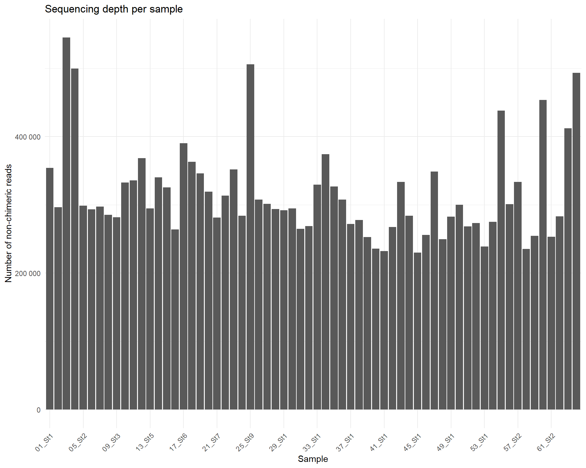
Alpha diversity
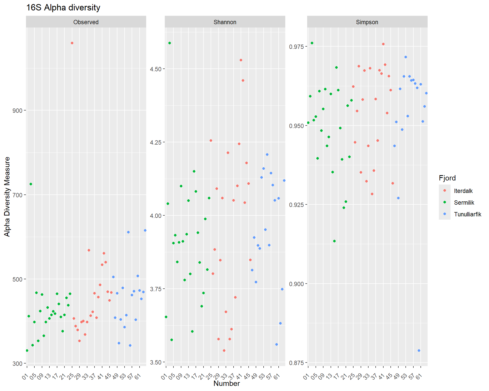
Note💬 Discussion — Alpha diversity patterns
Observed richness (number of ASVs), Shannon and Simpson diversity are fairly similar across fjords and the ocean samples.
Note💬 Discussion — Alpha diversity patterns
Observed richness (number of ASVs) tend to be increasing with depth.
Ordination
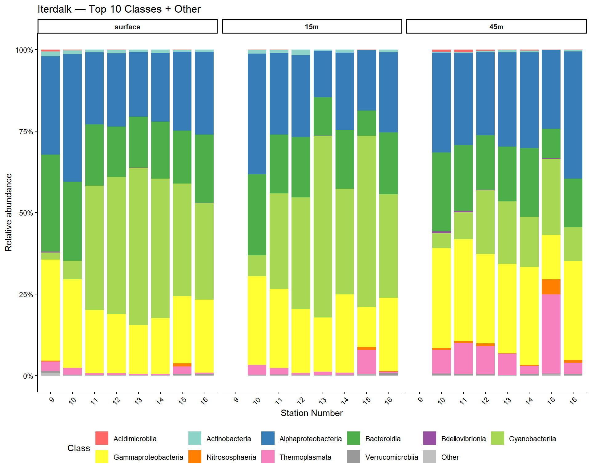
Note💬 Discussion — Beta diversity
The ordination shows clustering of samples by fjord, indicating fjord-level structuring of bacterial communities. Sermilik forms a relatively distinct and tightly clustered group, whereas Tunulliarfik exhibits greater within-fjord variability. Notably, there is considerable overlap between Itterdalk and Tunulliarfik, suggesting partial similarity in community composition and potentially shared environmental controls. Overall, fjord identity contributes to community differentiation, although separation is not absolute among all systems.
Next: check if dispersion differs significantly? betadisper(…) permutest(…)
NOTE: some samples are pretty distant from the others . Who are they?
SampleID
Axis.1
Axis.2
04_St2_D1
04_St2_D1
-0.5962332
-0.0705333
01_St1_D1
01_St1_D1
-0.5730710
-0.0909929
07_St3_D1
07_St3_D1
-0.5275916
-0.1026071
10_St4_D1
10_St4_D1
-0.4828438
-0.0894062
56_St20_D1
56_St20_D1
-0.4406480
0.0495069
Note
The most divergent samples in the ordination correspond exclusively to surface samples (ID ending with D1). These stations were influenced by meltwater and low salinity conditions, suggesting that surface stratification and freshwater input may exert a strong effect on microbial community composition. This pattern indicates that vertical position and freshwater influence may be key drivers of community differentiation in these fjord systems.
Phylum composition
Note💬 Discussion — Phyla composition
The bacterial community across samples is dominated by Pseudomonadota, with consistent contributions from Bacteroidota and Cyanobacteriota. Minor but detectable archaeal phyla were present at low relative abundance. Overall community structure is broadly similar across samples.
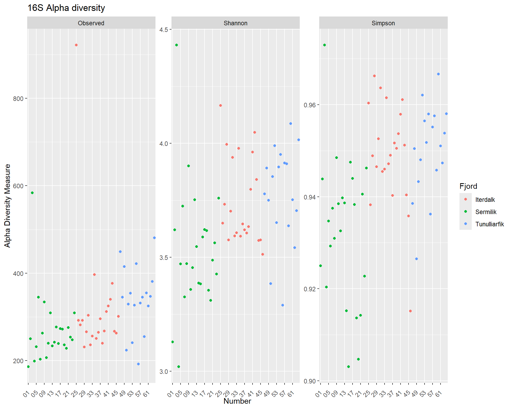
Plotting by fjords and depth
Sermilik
Iterdalk
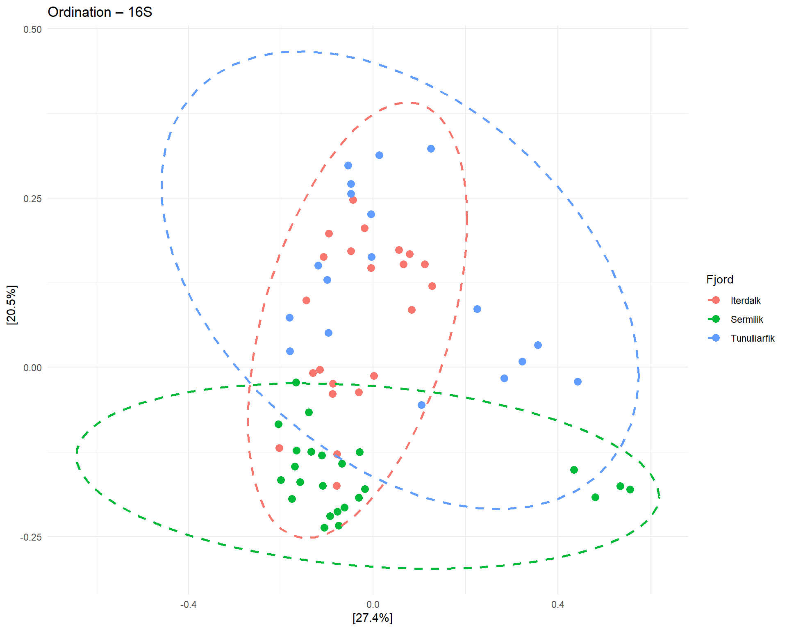
Tunulliarfik
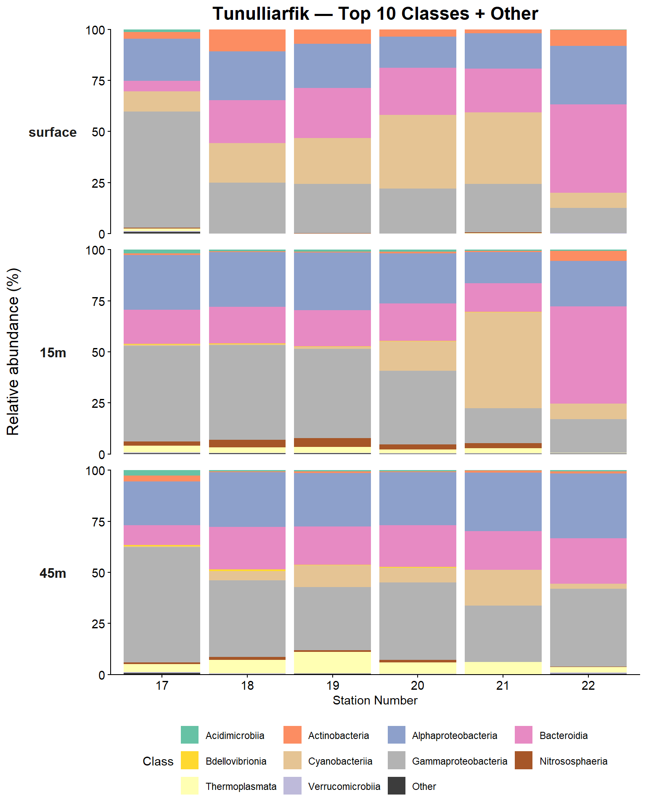
Plotting by water masses
Metling water
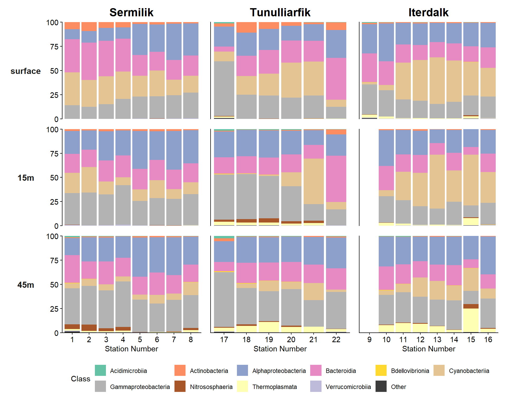
Atlantic Water
West Greenland Shelf Water
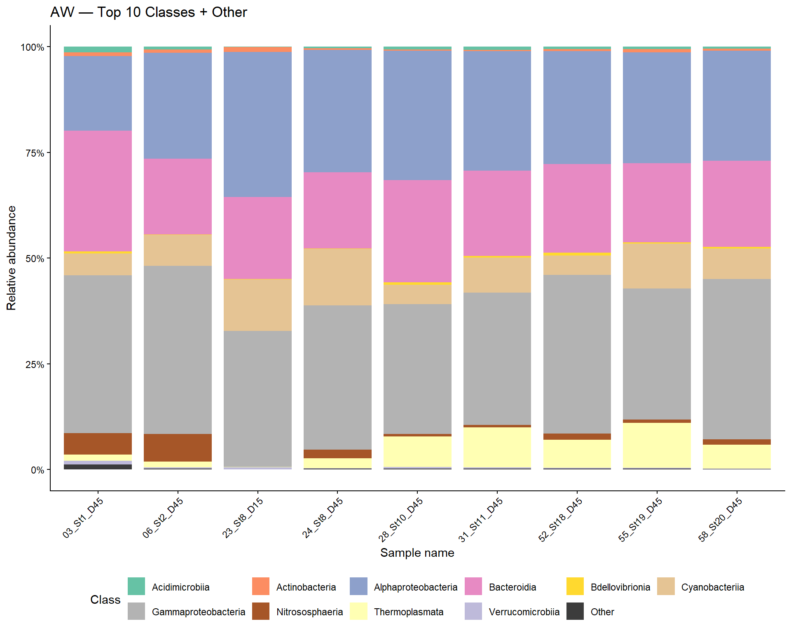
West Greenland Irminger Water
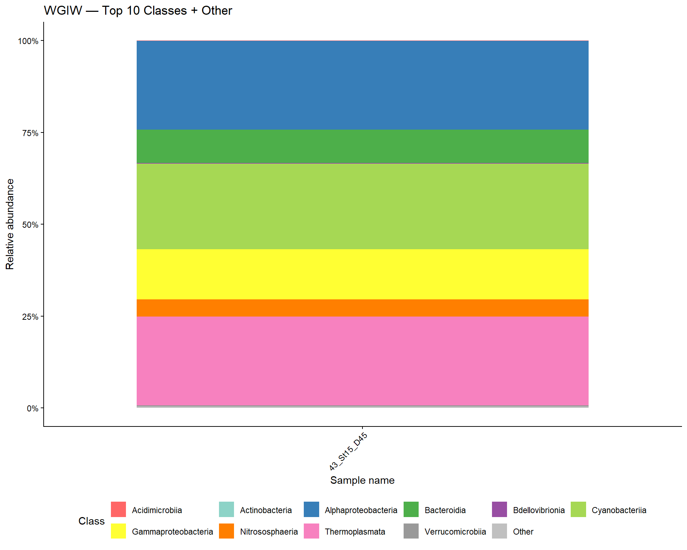
18S Dataset
📦 Build the phyloseq object (16S)
🔹 A summary of the phyloseq object
phyloseq-class experiment-level object
otu_table() OTU Table: [ 16357 taxa and 66 samples ]
sample_data() Sample Data: [ 66 samples by 9 sample variables ]
tax_table() Taxonomy Table: [ 16357 taxa by 20 taxonomic ranks ]
Those control are less reassuring than the 16S ones:
Positive control: 438k reads, 171 ASVs → 171 ASVs sounds high, but can have different explanations!
Extraction negative: Extraction negative: 243 reads, 3 ASVs → This is still very low, but higher than the 16S negative (which had 4 reads).
Let’s dive into it!
Negative control
Genus
Family
Phylum
Reads
Ansanella
Suessiaceae
Myzozoa
205
Protodinium
Dinoflagellata_incertae_sedis_EXT
Myzozoa
38
Note💬 Discussion — Negative control
The 18S extraction negative control contained 243 reads distributed across two dinoflagellate genera that (as we will see later) are also abundant in the environmental samples. Given the low read count (~0.1% of a average sample depth) and taxonomic identity, these sequences likely reflect minimal index cross-talk rather than true contamination. No need for decontamination!
Positive control
OTU
Reads
ASV15
272251
ASV56
56991
ASV327
5966
ASV346
5450
ASV1
5371
ASV423
3887
ASV433
3722
ASV493
2968
ASV587
2320
ASV602
2263
Note💬 Discussion — Positive control
From the Zymo standard, we are expecting 2 yeasts:
🍄 Yeasts:
Saccharomyces cerevisiae
Cryptococcus neoformans
The 18S positive control was dominated by the expected yeast taxa (Saccharomyces cerevisiae and Cryptococcus spp.), confirmed via BLAST analysis (the MZG database is not adapted in this case).
However, several marine dinoflagellate ASVs were also detected at low relative abundance (~1–2% each). Given the dominance of yeast sequences and the minimal read count in the extraction negative control, these minor marine taxa most likely reflect low-level cross-contamination during PCR or library preparation rather than sample mislabeling or widespread contamination. The overall composition confirms successful amplification of the mock community while indicating minor carryover from environmental samples.
We can now remove the controls from the phyloseq object and move on with the ecological interpretation.
📊 Data visualisation
In this section, we explore the community structure of the RoCSI 18S dataset using the phyloseq object (ps_18s) generated above. We start by visualising read depth per sample, followed by basic taxonomic composition summaries.
Read depth per sample
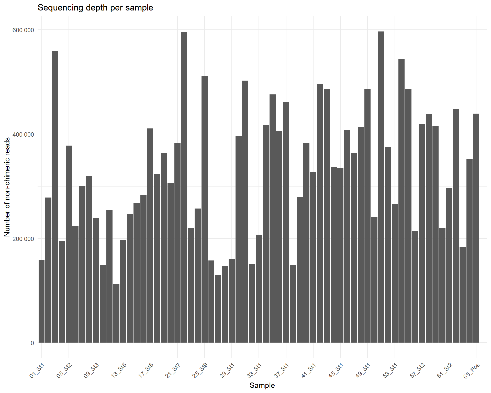
Alpha diversity
Note💬 Discussion — Alpha diversity patterns
Alpha diversity of 18S eukaryotic communities varied among fjords, with Ocean and Tunulliarfik samples generally exhibiting higher richness compared to Sermilik. Shannon and Simpson indices indicate relatively high evenness across most samples, although occasional dominance events were observed (diversity drops), particularly in Sermilik and Tunulliarfik. Compared to 16S prokaryotic diversity, 18S communities displayed greater variability among fjords, suggesting that eukaryotic plankton communities may be more sensitive to local environmental gradients such as stratification and meltwater influence.
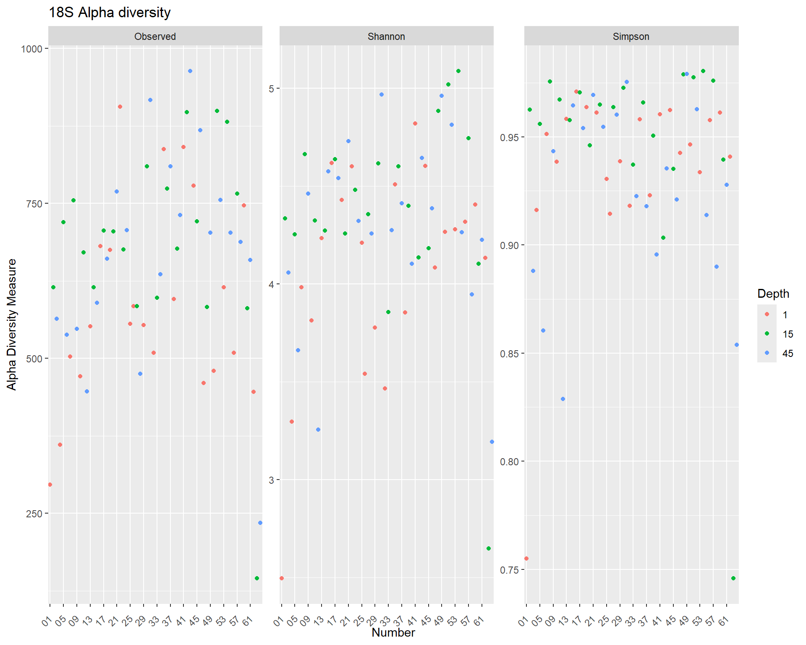
Note💬 Discussion — Alpha diversity patterns
No obvious trends with depth… Maybe surface water tend to exhibit lower diversity…
Ordination
Note💬 Discussion — Beta diversity
The 18S ordination reveals partial clustering by fjord but with substantial overlap among systems. Compared to the 16S bacterial communities, eukaryotic assemblages show greater within-fjord variability and weaker separation among fjords. Tunulliarfik displays the highest dispersion, consistent with elevated alpha diversity and environmental heterogeneity. Overall, these results suggest that while fjord identity influences eukaryotic community structure, planktonic assemblages may be shaped more strongly by shared regional drivers such as stratification and bloom dynamics than by fjord-specific environmental filtering alone.
SampleID
Axis.1
Axis.2
50_St18_D1
50_St18_D1
-0.3679453
-0.3018036
56_St20_D1
56_St20_D1
-0.3628814
-0.1845450
04_St2_D1
04_St2_D1
-0.3416142
-0.3236995
10_St4_D1
10_St4_D1
-0.3276851
-0.2928791
01_St1_D1
01_St1_D1
-0.3265305
-0.2939818
Note
Again, the most divergent samples in the ordination correspond exclusively to surface (D1) samples. Particularly they are the stations surrounded by icebergs (Fjord Sermilik and Tunulliarfik). These stations were influenced by meltwater and low salinity conditions, suggesting that surface stratification and freshwater input may exert a strong effect on eukaryotic community composition.
Phylum composition
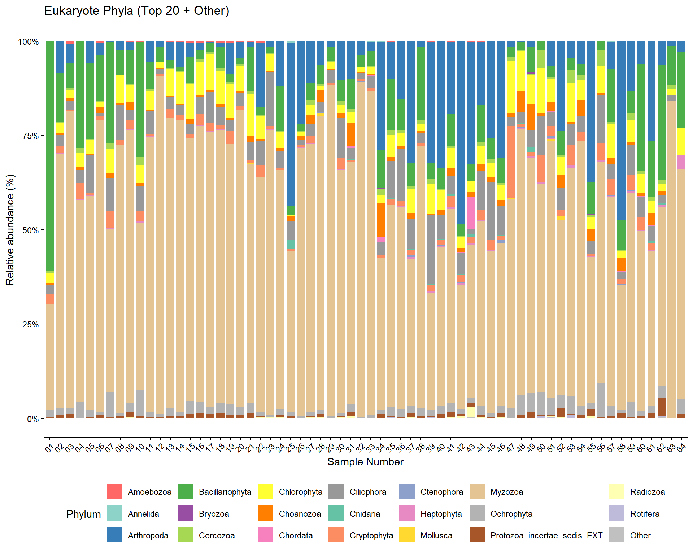
Note💬 Discussion — Phyla composition
At the Phylum level, eukaryotic communities are strongly dominated by Myzozoa, likely dinoflagellate lineages, across most samples. Bacillariophyta (diatoms) and Chlorophyta (green algae) contribute variably among samples, reflecting potential shifts in primary producer composition.
Note💬 Discussion — Class composition
At the Class level, eukaryotic communities were strongly dominated by Dinozoa (dinoflagellates) across most samples, with episodic increases in Bacillariophytina (diatoms) and Crustacea. These patterns suggest that dinoflagellates and associated trophic interactions play a central role in structuring the planktonic community. Compared to bacterial communities, 18S profiles exhibit stronger dominance patterns and greater patchiness.
Plotting by fjords and depth
Sermilik
Iterdalk
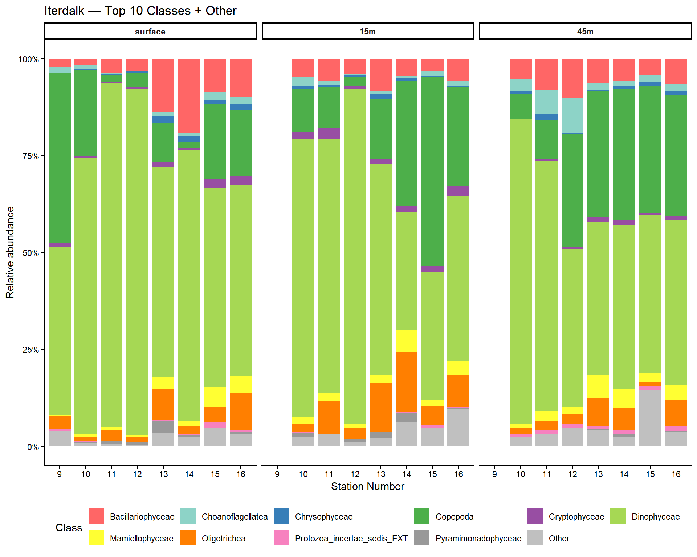
Tunulliarfik
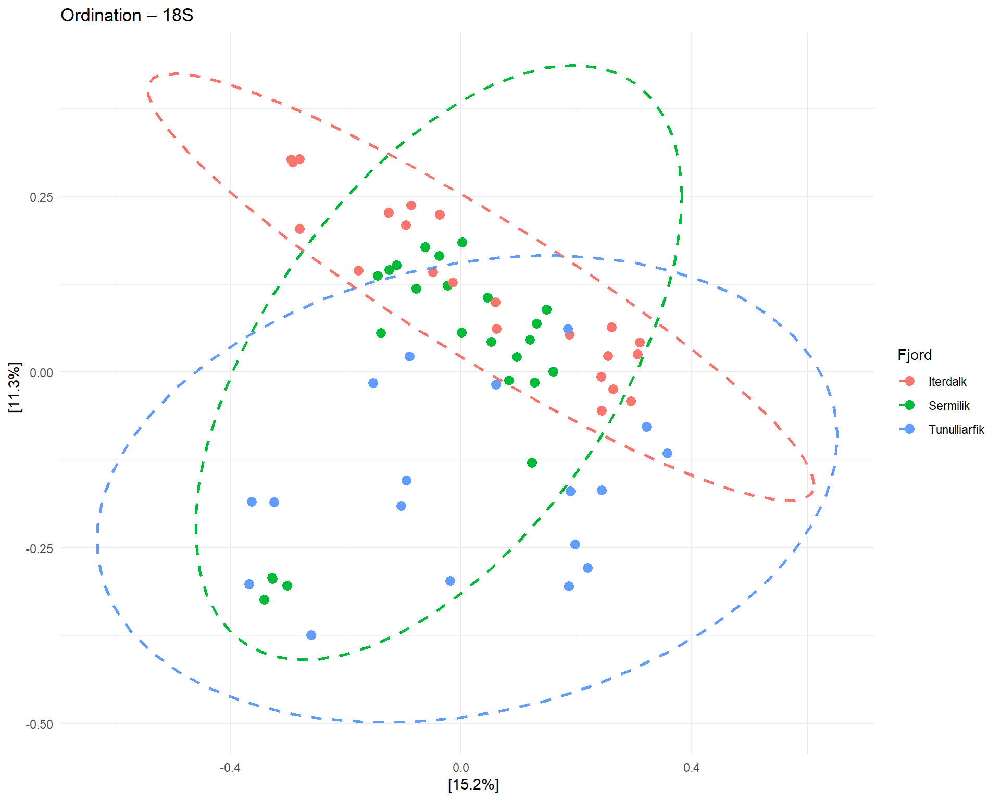
Combined 16S, 18S and metadata
Combining datasets
Taxonomy by water masses
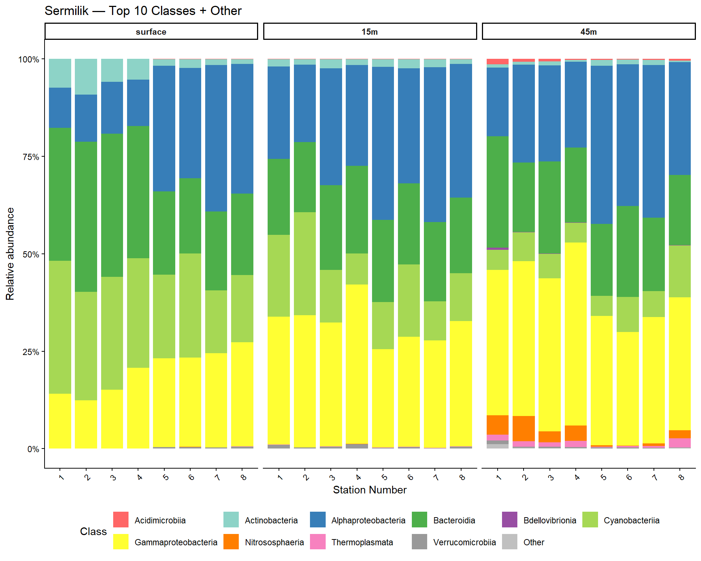
RDA
Permutation test for rda under reduced model
Permutation: free
Number of permutations: 999
Model: rda(formula = otu_16s_hel ~ Depth + Salinity + Pot_temperature + NO3 + PO4 + SiO2 + Chla_ugL, data = metadata)
Df Variance F Pr(>F)
Model 7 0.102344 10.85 0.001 ***
Residual 56 0.075464
---
Signif. codes: 0 '***' 0.001 '**' 0.01 '*' 0.05 '.' 0.1 ' ' 1
Depth 3.7 ✅ OK Salinity 18.5 ❌ VERY high Pot_temperature 2.3 ✅ OK NO3 5.9 ⚠️ borderline PO4 13.8 ❌ high SiO2 8.3 ⚠️ moderate Chla 2.0 ✅ OK
What to do? We could remove redundant variables
For example: keeping these: - Depth → physical structure - Temperature → water mass - NO3 → nutrients - Chla → biology
PCA analysis with environmental conditions
Note: To identify specific taxa (at the genus level) that are being driven by environmental conditions, I could use: 1. Extract and Plot Loadings from dbRDA 2. Correlation Analysis (Taxa vs. Environment) 3. Differential Abundance Testing 4. Machine Learning (Random Forest)
Looking for associations
Number of edges:
[1] 725
Plotting the Network graph (iGraph)
Bacteria Eukaryote
115 123
[1] 725
[1] 278
Note
💬 Note — Cross-domain associations
A total of 278 cross-domain edges were identified out of 725 total inferred associations, representing approximately 38% of all network connections.
This substantial proportion indicates that bacterial and eukaryotic communities are not structured independently. Instead, the network reveals meaningful cross-domain covariance patterns, suggesting coordinated ecological dynamics. These associations may reflect bloom-driven bacterial responses, shared environmental filtering, or potential trophic and metabolic interactions between microbial eukaryotes and prokaryotes.
🔹 Overall degre of connectivity:
Min. 1st Qu. Median Mean 3rd Qu. Max.
0.000 4.000 6.000 6.092 8.000 19.000
🔹 Bacteria degre of connectivity:
Min. 1st Qu. Median Mean 3rd Qu. Max.
0.000 5.000 6.000 6.974 9.000 19.000
🔹 Eukaryote degre of connectivity:
Min. 1st Qu. Median Mean 3rd Qu. Max.
0.000 3.000 5.000 5.268 7.000 12.000
NoteNetwork connectivity structure
The inferred cross-domain network comprised 238 taxa connected by 725 edges, with a median node degree of 6. Bacterial genera exhibited slightly higher connectivity (mean degree ≈ 7, maximum = 19) compared to eukaryotic genera (mean degree ≈ 5.3, maximum = 12). This pattern indicates a moderately connected but sparse network structure, without dominance by a few extreme hubs. The higher connectivity observed among bacteria suggests that prokaryotic taxa may act as integrators within the microbial community, associating with multiple eukaryotic groups. Overall, the degree distribution supports the presence of structured cross-domain coupling rather than random co-occurrence.
taxon
domain
degree
Phylum
Order
Genus_final
Bac_ASV286
Bacteria
19
Verrucomicrobiota
Opitutales
Diplosphaera
Bac_ASV53
Bacteria
14
Thermoproteota
Nitrosopumilales
Candidatus Nitrosopumilus
Bac_ASV250
Bacteria
14
Bdellovibrionota
Bdellovibrionales
OM27 clade
Bac_ASV18
Bacteria
13
Pseudomonadota
Pseudomonadales
SAR92 clade
Bac_ASV38
Bacteria
13
Pseudomonadota
Burkholderiales
RS62 marine group
Bac_ASV305
Bacteria
13
Bacteroidota
Chitinophagales
Aureispira
Bac_ASV3
Bacteria
12
Pseudomonadota
Pseudomonadales
SUP05 cluster
Bac_ASV58
Bacteria
12
Bacteroidota
Flavobacteriales
NS3a marine group
Bac_ASV68
Bacteria
12
Bacteroidota
Flavobacteriales
Aurantivirga
Euk_ASV69
Eukaryote
12
Myzozoa
Dinophysiales
Dinophysis
Bac_ASV169
Bacteria
11
Pseudomonadota
Beggiatoales
Pelagibaculum
Bac_ASV377
Bacteria
11
Planctomycetota
Pirellulales
Mariniblastus
Euk_ASV2
Eukaryote
11
Myzozoa
Peridiniales
Scrippsiella
Euk_ASV12
Eukaryote
11
Myzozoa
Peridiniales
Heterocapsa
Euk_ASV71
Eukaryote
11
Ciliophora
Oligotrichida
Spirotontonia
Euk_ASV192
Eukaryote
11
Myzozoa
Peridiniales
Pentapharsodinium
Bac_ASV5
Bacteria
10
Pseudomonadota
Rhodobacterales
Planktomarina
Bac_ASV8
Bacteria
10
Pseudomonadota
Pseudomonadales
Kineobactrum
Bac_ASV71
Bacteria
10
Bacteroidota
Flavobacteriales
NS4 marine group
Bac_ASV91
Bacteria
10
Pseudomonadota
Rhodobacterales
Octadecabacter
Building Network graph
Interactive plots
Overall cross-domain network
Note
This is great but it’s too complex so let’s filter out nodes that have degree < 11.
core of the network
[1] 14
[1] 12
[1] 14
[1] 12
Note
Bacterial hubs (blue) dominate the network core. These taxa are typical marine heterotrophic bacteria associated with phytoplankton or organic matter degradation.
The central structure appears around: RS62 marine group → Aureispira → Mariniblastus → OM27
Eukaryotes (yellow) appear as satellites linked to bacterial hubs. They connect mainly through bacterial hubs rather than directly to each other.
That pattern suggests that bacterial communities may be responding to eukaryotic blooms or shared environmental drivers.
Cross-domain partner preference
To better understand the ecological structure of the inferred 16S–18S association network, we examined cross-domain partner preference, i.e. which bacterial taxa were most frequently associated with eukaryotic taxa and vice versa. This allows identification of potential bacterial hubs linked to particular protistan or metazoan groups, and helps reveal whether the network is structured around specific cross-domain partnerships rather than diffuse associations.
To explore whether the cross-domain association network is organized differently among fjords, we can visualise fjord-specific core subnetworks derived from the global 16S–18S cross-domain network. For each fjord, let’s retain taxa present in samples from that fjord, extract the corresponding induced subgraph, and then filter to keep only highly connected nodes (core taxa). This approach provides an exploratory view of the dominant cross-domain network structure within each fjord while avoiding the instability associated with re-inferring sparse networks from small fjord-specific sample sets.
PICRUSt2 is giving you three levels of functional prediction from your 16S data:
KO = KEGG Ortholog
EC = Enzyme Commission number
Pathway = usually MetaCyc pathway in PICRUSt2 by default
They are related, but they are not the same kind of annotation. PICRUSt2 predicts gene-family abundances such as KO and EC, and then uses EC-based mappings to infer higher-level pathway abundances/coverage.
Pathways: multi-step metabolic processes
A pathway is a higher-level biological process made of multiple enzymatic steps, such as amino-acid biosynthesis, glycolysis-related routes, sulfur metabolism, or degradation pathways. In PICRUSt2, pathway predictions are typically MetaCyc pathways, and they are inferred from the predicted EC content.
Ordination
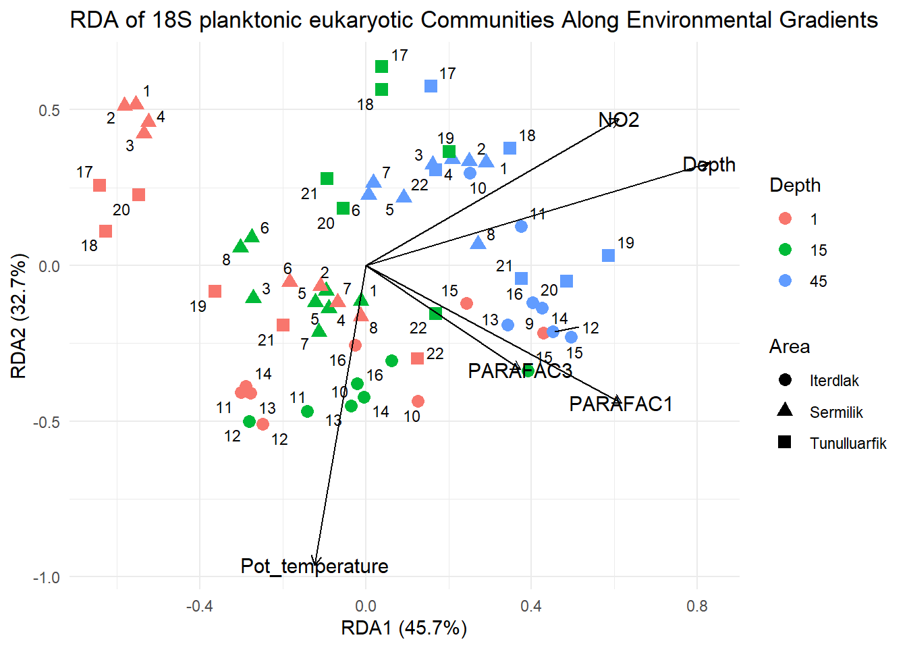
Visualise overall pathway differences
Below is the list of the samples that belong to the cluster on the right side of the heatmap figure above:
These samples are almost exclusively from 1 and 15 m… (there is one sample from 45 m)
KO: gene-family / ortholog groups
A KO groups homologous genes that are considered to perform an equivalent function in the KEGG system. So a KO is usually the closest of the three outputs to a specific functional gene family. For example, a KO might correspond to a transporter subunit, an enzyme protein, or another functionally defined gene product.
Visualise overall KO differences
Below is the list of the samples that belong to the cluster on the right side of the heatmap figure above:
Let’s see how many of these samples clustered in the right side of this plot are the same as those also cluster at the right of the heatmap of pathways:
It seems that all the 20 samples from the right-cluster of the pathway heatmap are again present here. What do the have in common? Likely their taxonomical diversity will be similar. I could group a variable to separate these from the rest of the samples and look at their spatial distribution…
Using ggpicrust2
ggpicrust2 was built specifically for PICRUSt2-derived functional profiles and provides a clean way to do differential abundance testing, annotation, and visualization of KO / EC / pathway outputs in R.
# Run ggpicrust2 with input file pathresults_file_input <-ggpicrust2(file = abundance_file,metadata = metadata,group ="your_group_column", # For example dataset, group = "Environment"pathway ="KO",daa_method ="LinDA",ko_to_kegg =TRUE,order ="pathway_class",p_values_bar =TRUE,x_lab ="pathway_name")# Run ggpicrust2 with imported data.frameabundance_data <-read_delim(abundance_file, delim ="\t", col_names =TRUE, trim_ws =TRUE)# Run ggpicrust2 with input dataresults_data_input <-ggpicrust2(data = abundance_data,metadata = metadata,group ="your_group_column", # For example dataset, group = "Environment"pathway ="KO",daa_method ="LinDA",ko_to_kegg =TRUE,order ="pathway_class",p_values_bar =TRUE,x_lab ="pathway_name")# Access the plot and results dataframe for the first DA methodexample_plot <- results_file_input[[1]]$plotexample_results <- results_file_input[[1]]$results# Use the example data in ggpicrust2 packagedata(ko_abundance)data(metadata)results_file_input <-ggpicrust2(data = ko_abundance,metadata = metadata,group ="Environment",pathway ="KO",daa_method ="LinDA",ko_to_kegg =TRUE,order ="pathway_class",p_values_bar =TRUE,x_lab ="pathway_name")# Analyze the EC or MetaCyc pathwaydata(metacyc_abundance)results_file_input <-ggpicrust2(data = metacyc_abundance,metadata = metadata,group ="Environment",pathway ="MetaCyc",daa_method ="LinDA",ko_to_kegg =FALSE,order ="group",p_values_bar =TRUE,x_lab ="description")results_file_input[[1]]$plotresults_file_input[[1]]$results